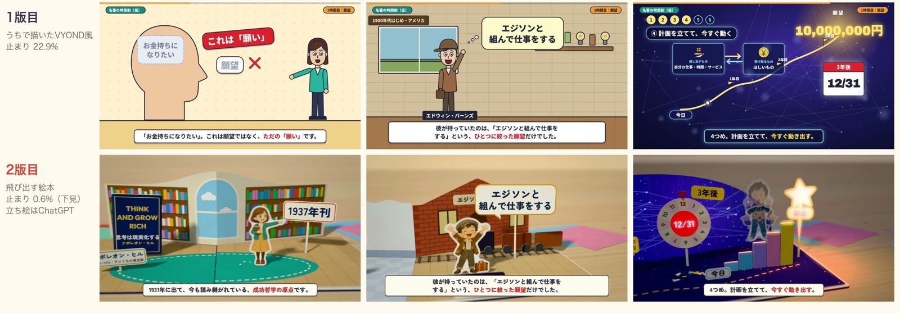

🎬 カドッチPJ 第2章
AI動画作成ワークフロー
作った物歴史の勢力図を2本と、本要約を2通り（ビヨンド風と、飛び出す絵本）。
わかったこと型は借りられます。絵柄をまねると負けます。差になるのは、見る体験と「誰の考えか」です。
次に選ぶこと下の3つの道から1つ。
動画は4本です
次の打ち合わせで選ぶ道
1哲学者・名著・歴史上の人物 × 飛び出す絵本 × 掛け合いの案内役うちの本線の候補
2歴史：勢力図と、武将が主役の「もしも」
3ショートの続き（コストを下げて）
次の一歩：予約リンクから、次の打ち合わせの日を取ってください。
ここから下は、読まなくても大丈夫です。気になった所だけ開いてください。
11月13日に話したこと
- 「YouTubeって視聴体験を上げていくゲームなんですよ」（かどっち）
- 「ビヨンドの枠内の編集で収まっちゃう」「その上限が今取っ払われた」
- 「この感じでパクられるんですよ、全てのチャンネル。秒で」「IP化する。キャラクター化する」
- 2人のやりたいが重なる所は、哲学・名著・歴史上の人物を映像で。かどっち「哲学書のやつ、やってみたいですね」、おけもん「好きな歴史人物とか作りたい」。
勢力図の、良かった所と届かなかった所
- お手本は「ドラマチック見聞録」（開設3週間で登録9,860人）。地図、対決カード、章の札の3つを借りました。
- 88秒の1本は、書き出しが2分34秒、声のお金は約10円です。
- サムネイルは、ChatGPTに依頼文を1通。1分ほどで出た1枚目です。
- 届いていない所：国の境は今の県の形、家紋は漢字1字、音はまだ耳で通していません。

本要約の、ビヨンド風の版と飛び出す絵本の版

同じ3つの場面。上がビヨンド風の版、下が飛び出す絵本の版です。
ビヨンド風の版
- お手本は「本要約チャンネル【毎日18時更新】」（登録182万人）。流れは写せました。
- 負けた所：人物が記号の人形のまま。おけもんの感想は「劣化版のコピーみたい」。
- 勝てた所：1:00〜1:31。カメラが頭の中へ入り、語りに合わせて図が組み上がります。
飛び出す絵本の版
- 同じ台本と声のまま、絵と動きを作り替えました。立ち絵はChatGPT、紙の景色はコードです。
- 画面が止まって見える時間は、22.9%から0.6%に減りました。
- 届いていない所：立ち絵の絵柄がそろい切っていない、口や腕は動かない、音はまだ耳で通していません。
作り方の流れ
お手本を見る型を抜く題材データを1枚書く機械が仕上げる人が見て投稿
🤖 機械がやる所
- 声と時間割
- 絵・地図・字幕と、はみ出しの検査
- 音楽と効果音、書き出し
- 概要欄の下書き
👀 人が見る所
- どの題材にするか
- 台本が原著や史実と合っているか
- 耳と目で1回ずつ
- 投稿ボタン
かどっちのディレクターさんとADさんに持ってもらうのは、「人が見る所」です。
似たチャンネルの調べ物
- 本要約をAIで作って伸びているのは、まだアニメ教養案内所（登録1.08万人）くらいです。
- 伸びている所は、画面が止まりません。1カットは10秒以内です。
- 人物が演技する本要約と、頭の中へ入る見せ方は、見た範囲のどこにもありませんでした。
- 歴史の「もしも」は、AIの筋書きと名乗る所が伸びていて、今年9〜11月に5つ以上が新しく始まりました。哲学者を物語のアニメにして伸びている所は、見つかりませんでした。
作ってみてわかったこと
- 型（掴み、章立て、画面の部品）は借りられます。
- 相手の絵柄をまねると、劣化コピーになります。
- 勝てるのは、見る体験の上乗せと、「わたしはこう思う」と言い切る見解です。
- 借りた型だけだと、秒でまねされます。残るのは案内役のキャラクターと世界観、つまりIPです。
方向性と、3つの道のくわしい所
案内役は、動物どうしの掛け合いが第一候補です。「AIはこう言ったけれど、わたしはこう思う」と言い切ります。
1 哲学者・名著・歴史上の人物 × 飛び出す絵本
- 見慣れた流れに、ほかに無い絵が乗ります。
- 新しい本は許諾の扱いを決めるので、最初は1937年の原著をうちの言葉でまとめる回からです。
2 歴史：勢力図と、武将が主役の「もしも」
- 題の候補：豊臣秀長が死ななかったら、武田信玄が死ななかったら、関ヶ原で西軍が勝っていたら。
- 戦争の「もしも」は後回しにし、「フィクション」と明記します。地図データの決まりは公開前に確かめます。
3 ショートの続き
- これまでの30本と仕組みが残っています。
- 30本で登録82でした。再生あたりの単価は下がっています。
次の打ち合わせで決めること
- どの道で行くか
- 誰が何を持つか（題材データを書く人、通しで見る人、チャンネルの持ち主、投稿する人）
- 最初の1本の題材